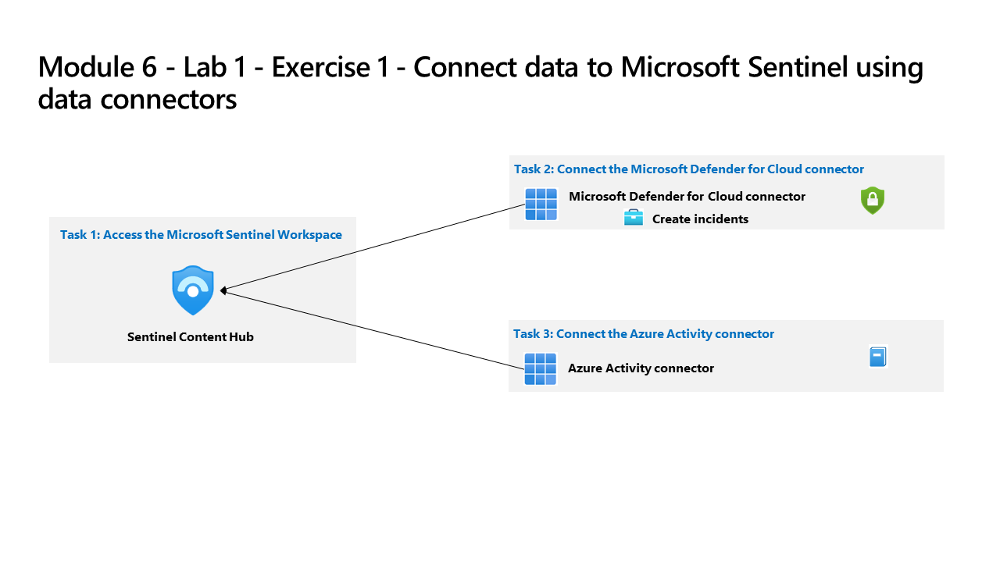
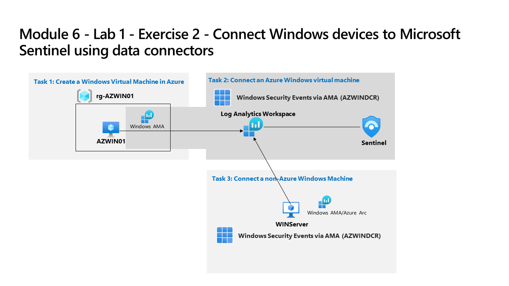
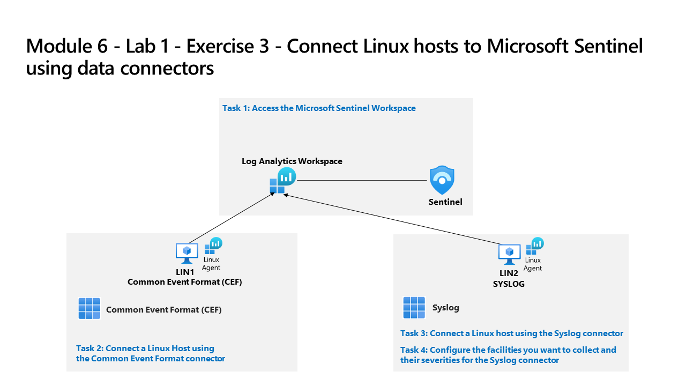

SC-200 Lab 6 – Microsoft Sentinel: Deployment & Data Connectors
Microsoft Security Operations Analyst — Lab 6
Lab 6 – Microsoft Sentinel: Deployment & Data Connectors
SC-200: Microsoft Security Operations Analyst
Overview
Deployed Microsoft Sentinel into Microsoft Defender and established data ingestion from multiple sources — Defender for Cloud, Azure Activity, Windows devices via AMA, Linux hosts via CEF and Syslog, and Defender XDR. Supplemented with Microsoft Learn exercises covering SIEM configuration and the Sentinel-to-Defender XDR integration.

Lab architecture diagram — Source: MicrosoftLearning/SC-200T00A-Microsoft-Security-Operations-Analyst, MIT License
Tasks Completed
Deployed Microsoft Sentinel and connected it to a Log Analytics workspace in the Defender portal
Accessed the Sentinel Content Hub and installed solution packages for key data connectors
Connected the Microsoft Defender for Cloud data connector (enabled incident creation)
Connected the Azure Activity data connector to ingest subscription-level events

Lab architecture diagram — Source: MicrosoftLearning/SC-200T00A-Microsoft-Security-Operations-Analyst, MIT License
Created an Azure Windows Virtual Machine (AZWIN01) in a dedicated resource group
Connected the Azure VM to Sentinel using the Windows Security Events via AMA connector and a Data Collection Rule
Connected a non-Azure Windows machine (WINServer) to Sentinel via Azure Arc and the AMA connector

Lab architecture diagram — Source: MicrosoftLearning/SC-200T00A-Microsoft-Security-Operations-Analyst, MIT License
Connected a Linux host (LIN1) to Sentinel using the Common Event Format (CEF) connector
Connected a second Linux host (LIN2) using the Syslog connector and configured facility/severity collection
Connected Microsoft Defender XDR as a data connector to ingest XDR incidents and alerts into Sentinel
Configured SIEM security operations settings across three Microsoft Learn interactive exercises
Deployed Sentinel to Microsoft Defender XDR via the integration simulation exercise (Microsoft Learn)
Environment: Employer-provided Azure subscription (resources deleted after lab).